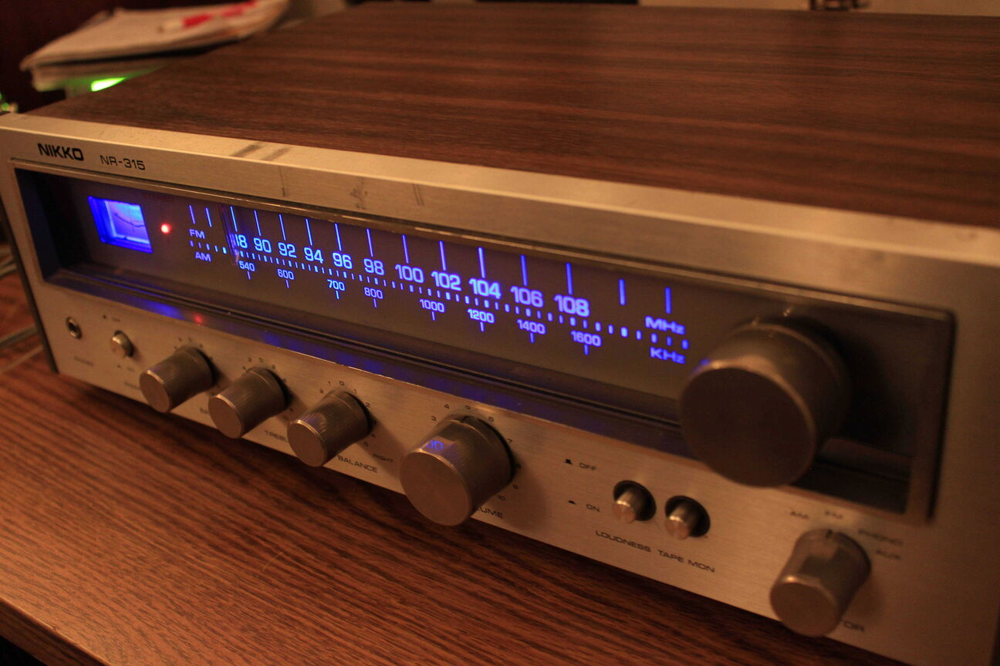

Projects
Contact
About
Projects
Full Builds
Optical Tremolo
A guitar effect built from an old record player
Restore/Repair
Nikko NR-315
 Repair of a flea market found amplifier
Lafayette Stereo-10
Another flea market found amplifier repair
Experiments
Comparator Fuzz
Using a comparator to create a fuzz effect for guitar